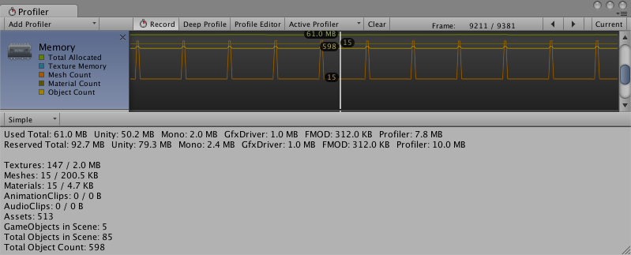
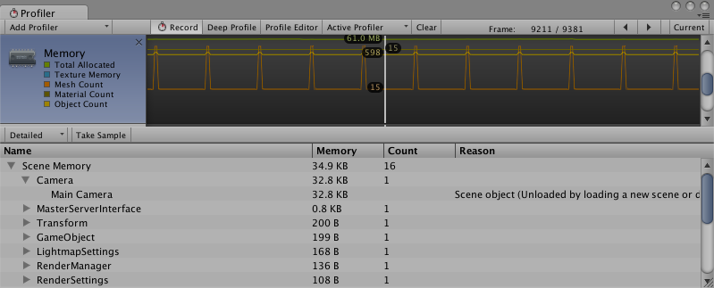

Memory Profiler
There are two modes you can use in the Memory Profiler to inspect the memory usage of your application. This is selected in the dropdown in the top-left of the lower panel.
Simple
The Simple view shows a simple overview how memory is used throughout Unity in real-time on a per-frame basis.

Unity reserves memory pools for allocations in order to avoid asking the operating system for memory too often. This is displayed as a reserved amount, and how much is used.
The areas covered by this are:
- Unity The amount of memory tracked by allocations in native Unity code
- Mono The total heap size and used heap size used by managed code. This memory is garbage-collected
- GfxDriver The estimated amount of memory the driver is using on Textures, render targets, Shaders and Mesh data.
- FMOD The Audio driver's estimated memory usage
- Profiler Memory used for the Profiler data
The numbers that are displayed are not the same as the Task Manager or Activity Monitor, because some usage is untracked by the Memory Profiler. This includes memory used by some drivers, and memory used for executable code.
Memory statistics are shown for some of the most common Asset/object types. These stats include the count and the used memory (main and video memory):
- Textures
- Meshes
- Materials
- Animations
- Audio
- Object Count
Object Count is the total number of objects that are created. If this number rises over time, your game is creating some objects that are never destroyed.
Detailed
The Detailed view allows you take a snapshot of the current state. Use the Take Sample button to capture detailed memory usage. Obtaining this data takes some time, so the Detailed view should not be expected to give you real-time details. After taking a sample, the Profiler window is updated with a tree view where you can explore memory usage.

This displays individual Assets and GameObject memory usage. It also displays a reason for a GameObject to be in memory. Common reasons include:
- Assets: Asset referenced from user or native code
- Built-in Resources: Unity Editor resources or Unity default resources
- Not Saved: GameObjects marked as DontSave
- Scene Memory: GameObject and attached components
- Other: GameObjects not marked in the above categories
Click on a GameObject in the list to view it in either the Project or the Scene view.
When profiling in the Editor, all numbers displayed by the Memory Profiler indicate the memory usage in the Editor. These are generally larger than when running in a player, because running the Unity Editor adds extra memory. For more precise numbers and memory usage for your app, use the Profiler connection to connect to the running player. This will give the actual usage on the target device.
Memory reported under System.ExecutableAndDlls is read-only memory, so the operating system might discard these pages as needed and later reload them from the file system. This generates lower memory usage, and usually does not directly contribute to the operating system's decision to kill the application. Some of these pages might also be shared with other applications that are using the same frameworks.